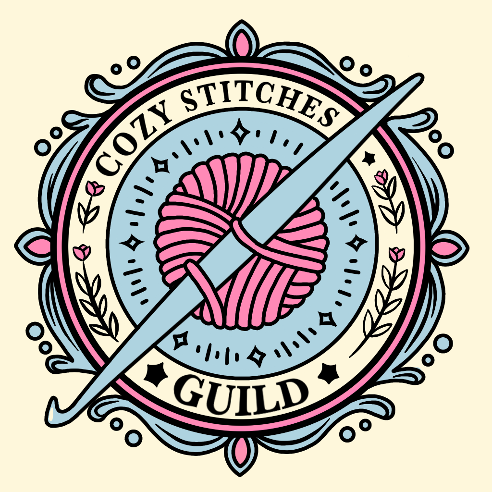
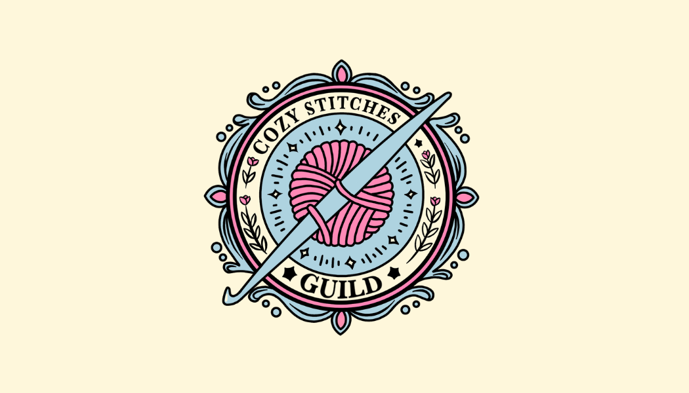
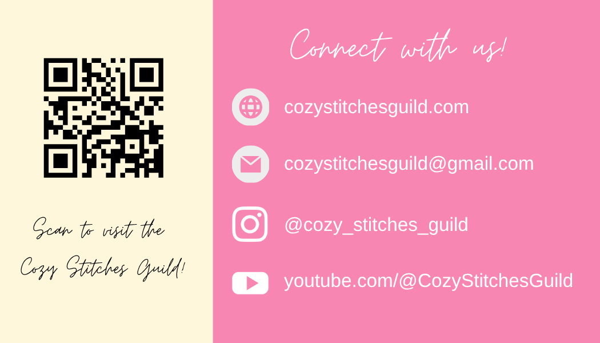

Cozy Stitches Guild
A fully operational e-commerce and content platform for a handmade fiber arts brand, connecting local craft sales with a global, monetized digital presence.
- Role
- Full-Stack Developer, Designer & Brand Owner
- Timeline
- July 2026 – Present
- Core technologies
- Odoo, Google AdSense, SEO strategy, content automation



Project overview
Cozy Stitches Guild is a digital storefront and content platform built to support a handmade fiber arts brand. I managed the complete project lifecycle, from platform architecture and UI design to search monetization and content-pipeline automation.
The platform bridges local, in-person craft sales with an online audience, while bringing product inventory, educational content, and brand information together in one professional hub.
The objective
The platform was designed to scale across three connected needs:
- Showcase and sell handmade crochet, knit, and resin crafts.
- Host a monetized, SEO-optimized blog that drives organic traffic.
- Serve as a professional hub for local vendor events and market appearances.
Technical implementation & execution
Platform architecture & configuration
- Odoo integration: Selected and configured Odoo as the CMS and ERP foundation. The site structure supports both digital content delivery and physical product inventory.
- Monetization & AdTech: Worked through domain and traffic requirements to secure Google AdSense approval and establish a passive revenue stream through targeted ad placements.
Content engineering & automation
- Programmatic content pipeline: Engineered a structured, scheduled pipeline for consistent weekly publication of long-form educational fiber arts articles (1,500+ words).
- SEO optimization: Developed focused technical topics, including motif construction, colorwork, and shawl geometry, with editorial guidelines to maintain brand voice and support search indexing.
Brand & UI/UX design
- Digital-to-physical branding: Created a cohesive visual identity for the website and physical product packaging, including custom safety and care tags for handmade dog toys and accessories.
- User journey: Designed clear navigation between educational blog resources and the e-commerce storefront.
Challenges & solutions
AdSense compliance
Reaching the threshold for Google AdSense approval called for more consistent, substantial content. I introduced an automated weekly blog schedule to grow the library of useful articles and support compliance with publisher policies.
Omnichannel inventory management
Keeping online availability accurate while selling at local outdoor vendor markets required disciplined inventory tracking. I used Odoo's backend inventory capabilities to record stock changes after weekend events and keep the storefront aligned with available products.
Project outcomes & next steps
The platform launched as a monetized digital business hub and now anchors the Cozy Stitches Guild brand. Its active blog supports ongoing online discovery, while the polished storefront and brand materials help present the business professionally for local vendor applications.
Back to projects